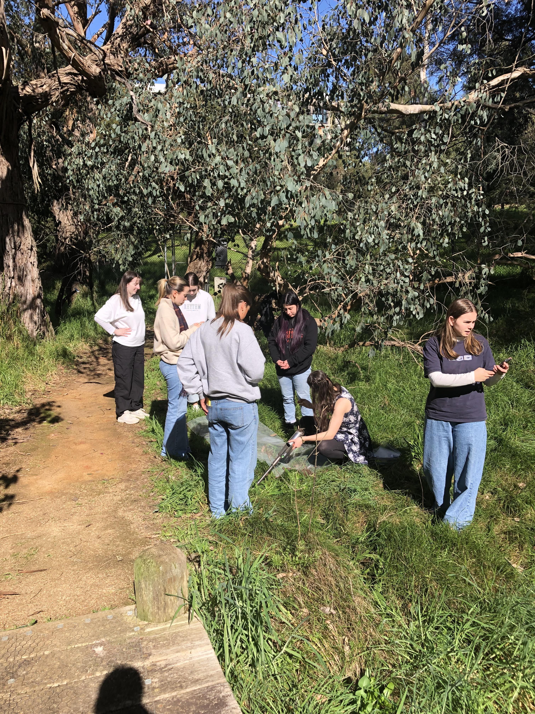
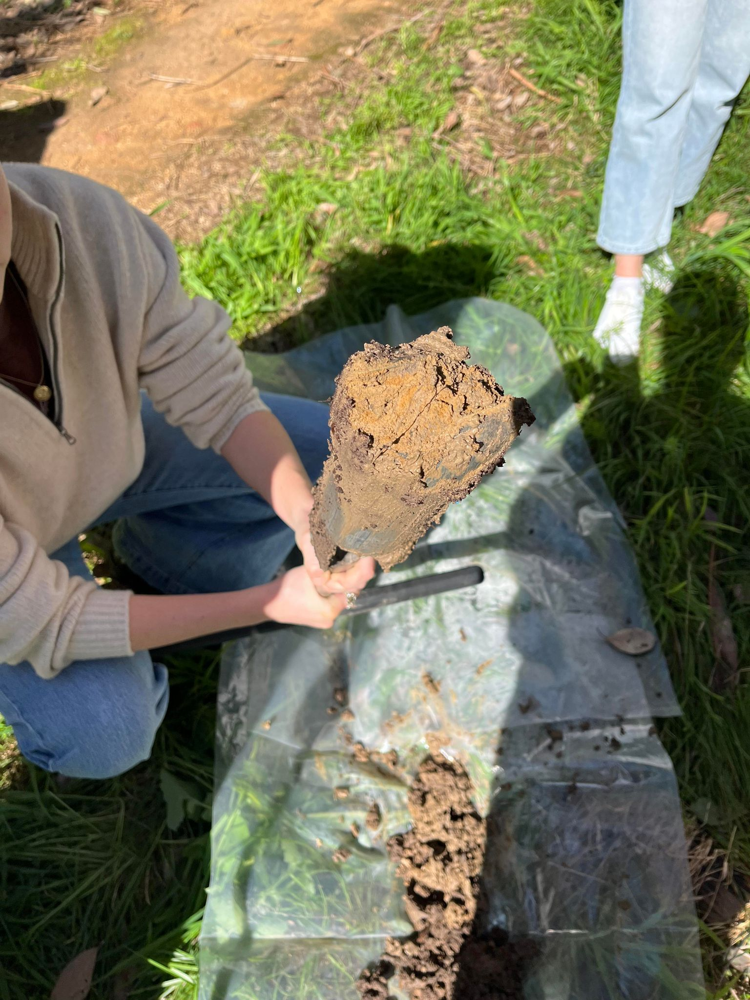
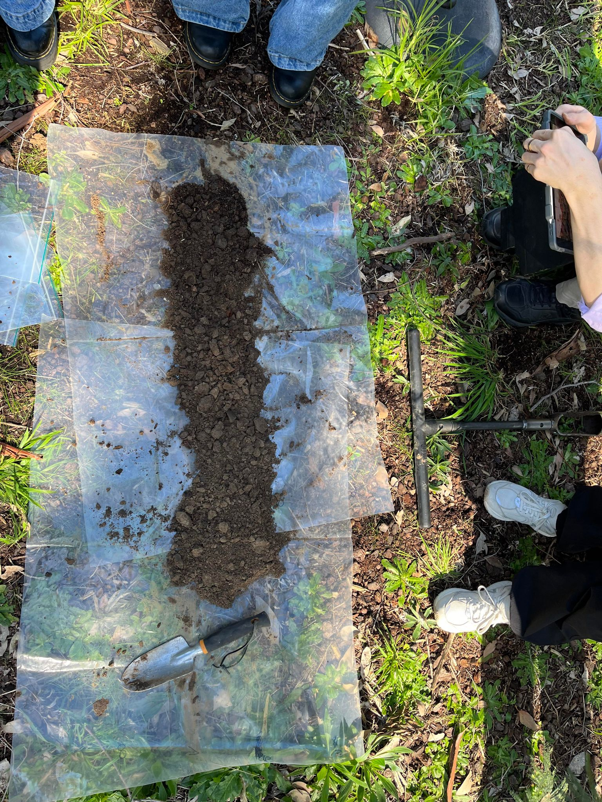

We obtained our soil samples: we chose site locations, dug out our samples using augers (a tool I was not familiar with) and separated horizon and transition levels. The site locations were recorded using Avenza, and I used these coordinates to create a map that depicted the sample sites from all groups (GIS). I felt that the map was a good addition to my soil SOE report.
We analysed the soil samples: this included chemical tests that require sensors as well as physical tests such as the ribbon method. This was done in the lab, and gave us the opportunity to use equipment we haven't before such as the conductivity meter.
2 / 5
GIS - Soil sample locations
3 / 5
Challenges
Obtaining soil samples: this was the biggest challenge from the soil classes. Unfortunately we chose sites that had high clay content, which resulted in the sample getting stuck in the auger, which you can see in Figure 2. We had to wrestle to remove the soil each time. This may have caused issues during our analysis, as the inefficient removal of soil may have interfered with the sample.
Judging soil characteristics: while the indicators that we used are not subjective, making decisions as to which category a soil fell into was at times challenging. Two indicators where I noticed this struggle was assessing soil texture by physically manipulating the soil, as well as the pH test. I think with both of these techniques, practice is the best and easiest way to improve since as we are exposed to more soil types, the differences become clearer.
4 / 5
Gallery

Figure 1: Group 2 collecting samples

Figure 2: Soil in an auger

Figure 3: Soils displayed to show horizons and transitions
5 / 5
Applications
Soil has many functions, but one of it's most important ones is providing nutrients for plants. Knowing the soil conditions is vital for ensuring that the revegetation efforts are effective.
Additionally, understanding the soil conditions assist in selecting plants that are suitable. This, combined with EVC species lists (mentioned in Vegetation Assessment entry), should enable Ecologi to select the best plants for the location.
Revegation is also a way to improve soil health. This is the best way to reduce erosion while also improving the overall health of the ecosystem. Erosion reduction also has additional benefits, including reducing pollution in waterways.